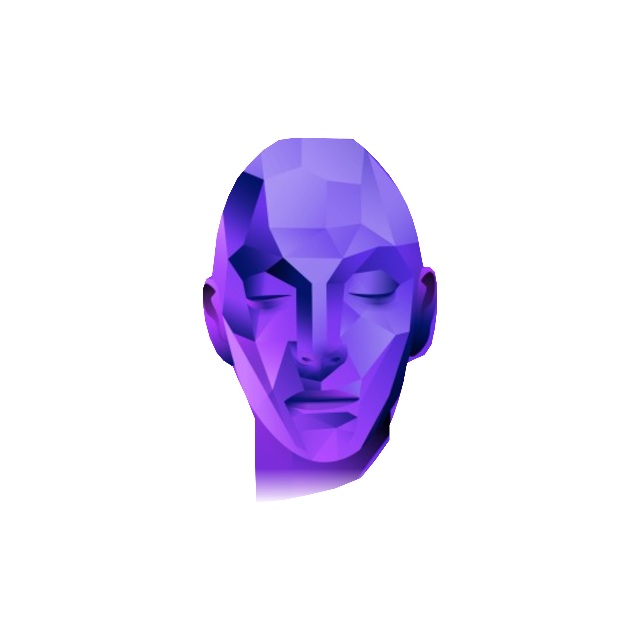

tap.
Case study: building the path to tap.’s first 10,000 downloads

tap. is an AI-powered app that connects people in the entertainment industry. I spent summer 2024 there as a product manager intern, before full launch. My job was to figure out what a new user goes through from install to their first real action, find where they get stuck, and help the team fix it.
- Company
- tap., Los Angeles (remote)
- Role
- Mobile App Product Manager Intern
- Timeline
- May – Aug 2024
- Skills
- User research, User flows, Behavioral analytics, Growth roadmap
- Team
- 20+ across product, design and engineering
Context
The entertainment industry runs on who you know. Actors, crew, casting directors and producers find each other through agents, word of mouth and a lot of scrolling. tap. wanted to shortcut that: its AI matches people with the collaborators, talent or jobs they’re actually looking for.
When I joined in May 2024, the app was in beta. Real test users were in it, launch was close, and requirements changed week to week. I reported directly to the founder and worked across a team of 20+ in product, design and engineering.
Problem and goal
The founder’s target was clear: 10,000 downloads by Q2 2025.
The beta showed the main problem, which was people quitting at sign-up. The ones who made it through often left their profiles empty. And on a matching app, an empty profile is a huge issue. The AI has nothing to match, so nobody gets a reason to stay.
So the real goal was bigger than just getting downloads. We also had to get every new user to a finished profile.
Goal: 10,000 downloads by Q2 2025, with as many new users as possible reaching a completed profile.
Constraints: beta-stage product, requirements shifting weekly, a 20+ person team moving fast toward launch.
The work, step by step
Step 1: Customer journey mapping
First I needed to see the whole thing the way a new user does. I mapped every screen between install and a finished profile: sign-up, picking your role (actor, crew, casting), filling in profile details like a photo, bio and credits, and the permission prompts along the way.
Each of those screens is a step in a funnel. Every one was a point where a new user could close the app, so the next question was which step was losing the most people.
Step 2: Finding where people quit
Every day I went through behavioral data for about 50 beta users. I used three lenses: the analytics dashboard for where people stopped, session recordings for how they got stuck, and conversations with users for why.
One step stood out. Roughly 60 to 70% of people dropped off when the app asked for personal info: photos, credits, the details that make a profile worth matching. That was exactly the information the AI needed, and exactly where we were losing people.
Step 3: Fixing the profile wall (User-Centered Design)
Two recommendations came out of the data.
- Make personal info skippableLet people get into the app with the basics and come back for photos and credits later. A half-finished profile beats a deleted app.
- Explain why it mattersIf the app says plainly that better info means better matches, filling it in feels like a payoff, not paperwork.
The skippable step shipped before launch.

Step 4: Planning the road to 10,000 (Growth Roadmap)
With onboarding as the foundation, I built a growth roadmap toward the founder’s Q2 2025 target. It had four tracks:
- Onboarding fixes firstSo every new download had a real shot at a finished profile.
- Referrals and invitesBecause this industry already runs on who you know.
- Social and contentOn the platforms where performers and creatives already spend time.
- Startup contests and eventsTo get tap. in front of early adopters and press.
Step 5: Shipping while everything moved (Agile Delivery)
None of this happened in a calm, finished product. Requirements shifted week to week, deadlines were tight, and I worked between product, design and engineering to keep up. Before release, I reviewed every screen and flow in the app.
Results
After the skippable profile step shipped, [metric: profile completion / sign-up drop-off] went from [X] to [Y].
tap. reached about [N] downloads by Q2 2025, close to the 10,000 target.
What I learned
Reporting straight to the founder was the best part. Decisions took a conversation, not a meeting series, and I could bring a finding directly to the person who decided what got built.
If I did it again, I’d talk to users more. The analytics told me where people quit. Conversations told me why. Next time I’d start with interviews and use the numbers to check what I heard.